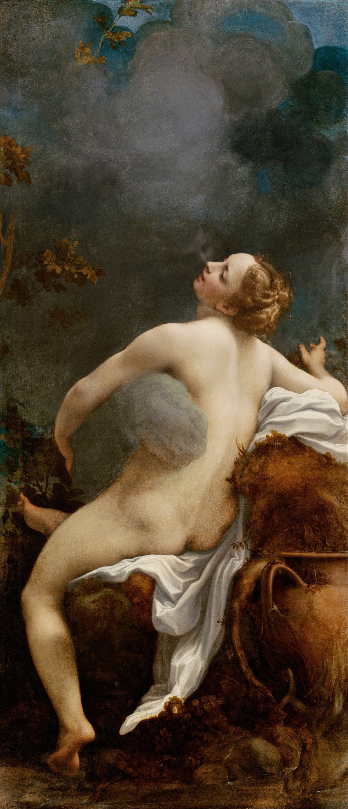

柯雷乔: 被遗忘的大师
- link
- 西方艺术课
柯雷乔(1499—1534)是16世纪早期的创新派画家, 是一位典型的「被遗忘的大师」, 死后一百余年, 他的伟大和对绘画艺术的贡献才被世人所知. 柯雷乔在画作中, 展示出了现代闪光灯技术下才有的效果, 他集众家绝活于一身, 可以说是「导演编剧灯光师」.
柯雷乔对于绘画艺术最重要的意义是, 在一定程度上融合了佛罗伦萨和威尼斯两派的艺术, 并直接推动了巴洛克艺术.
柯雷乔(Correggio), 原名安东尼奥·阿列格利(Antonio Allegri), 因为出生于意大利帕尔马地区的一个名叫柯雷乔的小村子, 所以被人们以出生地命名. 他的绘画综合了「意大利小三杰」的绝活, 再加上达·芬奇和提香的绘画特色, 形成了自己的独特风格. 柯雷乔不只是文艺复兴时期的杰出艺术家, 更是一位有超前意识的探索者.
佛罗伦萨的艺术注重「形」, 威尼斯则更注重「色」, 柯雷乔融合这二者, 集中体现在了他的画作《宙斯与伊娥》中. 宙斯经常会幻化成各种形象诱拐少女, 这是当时上流社会喜欢的世俗气息浓重的绘画题材之一, 所以很多画家都画过这类题材. 在《宙斯与伊娥》中, 宙斯变成了一团烟雾. 乍看之下, 这幅画完全是威尼斯风格的作品, 画面生动, 颜色鲜活. 但仔细看会发现达·芬奇的晕染法无处不在. 少女身体各部分阴影交界处, 非常柔和, 没有明显的线条分界; 宙斯化身成的这团烟雾, 简直就是晕染法教科书级别的展现.
柯雷乔是一位孤独的艺术家, 他的作品极具开创性, 甚至超越自己所处的时代太多, 所以导致死后很久才被发现他的价值所在. 此外, 柯雷乔选择发展的地域也限制了他的知名度, 如果他是在佛罗伦萨发展, 一定会在生前就名声大噪.
宙斯与伊娥: 